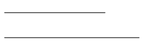
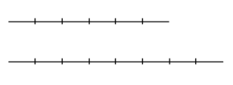

Getting started part 1
Monday at the library part 1
Fractions
It’s a Monday morning in late July and the von der Surwitz siblings—the twins Ute and Uwe and big sister Ursula—meet in a reserved study room at the main university library to go over what their Introduction to Computer Science teacher, Professor Chandra, had discussed with them at the Novalis Tech Open House the previous Saturday.
Having checked Professor Chandra’s course syllabus on her website, they already had made online purchases of the main text for the course, The Haskell Road to Logic, Maths and Programming by Kees Doets1 † November 5th, 2024. and Jan van Eijck. During the open house at the convention wing of the student center last Saturday, they had sat down together at a table with the professor as she paged through the text and talked extemporaneously about what parts she would like to handle and how. She also demonstrated some code on her laptop. Before they parted, she invited them to email her with any and all questions.
The professor encouraged them to dive into to the logic and sets prerequires, along with the first few chapters of The Haskell Road…, as well as to get through as much Learn You a Haskell for Great Good as possible.
Ursula von der Surwitz has plugged in her laptop to the room’s big 4K monitor and is scrolling through some of her personal notes.
𝔘𝔯𝔰𝔲𝔩𝔞: So like
Professor Chandra said on Saturday, we’re going to rely heavily on
logic and set theory.
[murmurs of agreement and then silence]
[continuing] It seems a bit ominous.
𝔘𝔴𝔢: Out with the old
math, in with the new.
[nods and agreement]
𝔘𝔱𝔢:: But like she was
saying, comp-sci math is sort of a grab-bag of higher math topics. She
said it’s bits and pieces of what you’d be learning as a math major
after all the calculus and differential equations and linear
algebra.
[murmurs of agreement]
𝔘𝔴𝔢: Like she was
showing us, you need to understand the underlying set theory to
properly define relations and functions.
[more agreement murmurs]
𝔘𝔯𝔰𝔲𝔩𝔞: Well, like
Vati2
German for dad, papa.
said, his math degree really smoothed the way for his
chemical engineering studies.
𝔘𝔴𝔢: Get as much math
as you can as early as you can.
[murmurs of agreement]
𝔘𝔱𝔢: Well, I’m
psyched.
[She looks around and receives nods]
[continuing] I’m psyched because — as the professor said — this
course is totally experimental and open-ended. She’s basically going
to give us what she’d be giving her college freshman and sophomores in
the CS department. And she’s on sabbatical, so we get her total,
undivided attention.
𝔘𝔴𝔢: Amazing. It’s only
us, her daughter — and maybe three others who weren’t there and
might not take it after all. Wow.
𝔘𝔱𝔢: Bottom line: We’ve
got a once-in-a-lifetime chance to really learn a ton about
comp-sci. Yeah, this is totally amazing.
𝔘𝔴𝔢: Now all we have to
do is hang on for dear life!
[laughter]
𝔘𝔯𝔰𝔲𝔩𝔞: [paging through
Haskell Road… ] Did anyone look at the first chapter?
[affirmative nods]
[continuing] Wasn’t too bad — once I caught on to what he was
saying. But definitely, Learn You a Haskell… helped. And the other
pre-reqs as well.
[murmurs of agreement]
𝔘𝔱𝔢: [pointing to a
page in Haskell Road first chapter] Right, creating a test for
prime numbers with Haskell code.
𝔘𝔯𝔰𝔲𝔩𝔞: I was looking
around on the internet and I kept running into the Fundamental Theorem
of Arithmetic. Know what I’m talking about?
𝔘𝔴𝔢: Right, it’s where
all the counting natural numbers—one, two, three, four—off to
infinity—are either prime themselves or just multiples of primes.
[group pause to consider]
𝔘𝔱𝔢: So all integers
are either a prime number themselves or composed of a multiple of
primes. Yeah, they call non-prime numbers composite numbers.
[pause to think]
[writing on the whiteboard] It makes sense. So looking at \(12\). You
can say it’s \(3 \cdot 4\). But that contains composite number \(4\), which
you can break down into \(2 \cdot 2\). So \(12 = 3 \cdot 2 \cdot 2\), which is, of
course, all primes. And as I remember, the order of the primes doesn’t
matter.
[murmurs of agreement]
𝔘𝔯𝔰𝔲𝔩𝔞: Lots of lore
around primes.
[more murmurs of agreement] 𝔘𝔴𝔢: So do you remember back in
school in Kiel we first learned to add and subtract fractions with
unlike denominators?
[murmurs of acknowledgement]
[continuing] First we just learned to cross-multiply to get the
numerators, then multiply the denominators together to get the new
denominator, then add or subtract the numerators, then reduce the
answer.
[murmurs of acknowledgement]
[continuing] But then we learned the prime factorization way. I can
hear the teacher actually saying that all whole numbers are either
primes or multiples of primes. And we were supposed to notice how
fractions always start out as a whole number over a whole number.
[affirmative murmurs]
𝔘𝔯𝔰𝔲𝔩𝔞: Yes, right,
that business of fractions being in their rational form—rational
meaning in a ratio. But then fractions could also be in their
decimal form. Right. I remember all the odd things about what a
ratio, or in German Verhältnis, really meant.
𝔘𝔱𝔢: When we had that
class we also talked about why the Greeks said, for example, \(7\)
measures \(35\;\). Yeah, so that means \(7\) divides \(35\) evenly, no
remainder. And then there was commensurable and incommensurable,
which is about rational and irrational.
𝔘𝔴𝔢: Oh yeah, I
remember! The teacher said that a rational number, a fraction, falls
somewhere on the number line that can be measured by some unit on
the number line. But I’m a bit hazy on just what that really means
now. Oh well, skip it!
[laughter]
[continuing] No, no, I remember now! So say you have
\(\frac{3}{16}\). That’s \(3\) measures of the unit \(16ths\) —or the
number line divided into \(16ths\) —then you go out three ticks on
this line divided into \(16ths\) to where \(\frac{3}{16}\) is on
the number line. So technically \(3\) and \(16\) are commensurate.
[silence’ confused faces of female siblings]
𝔘𝔯𝔰𝔲𝔩𝔞: [calling up
Wikipedia article] No, no, not quite, dear brother. [then finding
another article on commensurability, studying it, then going to the
board] No, here [drawing]:

Take these two line segments. If there exists another smaller line
segment

such that the small line can be used to evenly measure the two
larger line segments

then the two larger line segments are commensurate, exactly because
the smaller segment is their common measure. In other words, the two
larger segments are whole number multiples of the third, smaller
length.
𝔘𝔴𝔢: But then doesn’t
unit \(1\) always wind up being the common measure?
𝔘𝔱𝔢: Because two line
segment lengths—or just numbers, like \(\frac{3}{16}\) —can be shown
to be commensurate, with common measure unit \(1\), then we can say
it’s a rational number with a place on the number line.
[confused looks]
𝔘𝔯𝔰𝔲𝔩𝔞: So the
Wikipedia articles says this [writing on the board]
𝔘𝔱𝔢: Let’s bring it
back to Earth, shall we? [laughter] The bottom line is rational
numbers are numbers where a ratio of integers can represent a real
place on the number line. If this is true, then the numerator and
denominator are commensurate. But if you can’t represent a number as a
ratio of two integers, then it is irrational.
𝔘𝔴𝔢: But what about
decimal numbers? Like, say, \(1.5\)?
𝔘𝔱𝔢: No problem. We
still can express this as a rational number [writing on the board]
Now, we multiply top and bottom by \(2\) and get
\begin{align*} \frac{3.0}{2} = \frac{3}{2} \end{align*}and there’s the trick to turn any decimal into a rational of just integers.
𝔘𝔱𝔢: So irrational
numbers are incommensurable because you can’t divide the number line
into any units—no matter how fine—that can then be measured out to
an exact spot.
[murmurs of agreement from girl siblings]
𝔘𝔴𝔢: I like the idea
our math teacher gave us about irrationals, that you can have a
rational number slightly less than and a rational number slightly
greater than your irrational number. But then no matter how close you
make the less-than and greater-than numbers to the irrational, you
never get to the irrational number. She said it’s like looking down
into a bottomless abyss on the number line.
𝔘𝔱𝔢: You know what
we’re doing? We’re relearning math as humans—and not just as circus
animals learning tricks.
[laughter]
[continuing] No, really! So much of math before in school was just
repeating stuff without really knowing at any deep level what was
going on.
[murmurs of agreement, albeit grimly]
[silence, interrupted by Ursulua]
𝔘𝔯𝔰𝔲𝔩𝔞: [brings up the
Wikipedia article on the Fundamental Theorem of Arithmetic in both
English and German, then reading from the English page]
Every positive integer \(n > 1\) can
be represented in exactly one way as a product of prime powers.
Right. So down further in the proof it uses Euclid’s lemma, which says
If a prime \(p\) divides the product
\(ab\), then \(p\) divides either \(a\) or \(b\) or both.
𝔘𝔱𝔢: Fun stuff, that
second one. So what does it mean? [pulling an ironic face]
𝔘𝔴𝔢: [also ironically]
I’ll have to think about it a bit…
[laughter]
[continuing] No, it must work towards explaining exactly
mathematically. how all numbers must be multiples of just primes and
not other composite numbers.
𝔘𝔯𝔰𝔲𝔩𝔞: Well, for your
information I did look into this. And for part of the
proof. [half-mumbling the German page’s proof] it uses a contradiction
proof. Our favorite.
[laughter]
𝔘𝔴𝔢: Oh, right, good
old contradiction. That’s where you take off at top speed at a brick
wall, smash into brick wall, die … and then you know you should
have gone exactly the opposite direction.
[laughter]
𝔘𝔱𝔢: So yeah, once
you’ve done all the factoring all numbers are products of primes.
𝔘𝔴𝔢: Just accept it and
use it. Don’t try to prove it. Time to think like a physicist.
[laughter]
𝔘𝔯𝔰𝔲𝔩𝔞: I guess
technically we can factor a prime. Any prime is just itself times
\(1\).
𝔘𝔴𝔢: I looked into this
and somewhere they called that business of a number just times \(1\) a
singleton factoring.
[girl siblings stare blankly at Uwe. Then laughter.]
𝔘𝔯𝔰𝔲𝔩𝔞: [continuing]
But seriously, we have to get used to the exact terminology. For
example, non-prime numbers that are multiples of smaller numbers are
called composite numbers.
[silence]
[continuing] So, do we just trust that all numbers are multiples of
primes? Or do we go further down the rabbit hole?
[siblings look at one another]
𝔘𝔴𝔢: Remember how that
one book—can’t remember which—began the whole discussion of primes
with the Sieve of Eratosthenes?3
Animated Sieve of Eratosthenes

[murmurs of agreement]
[continuing on the board] It shows how just by starting at the
beginning of the set of primes, \(2\), \(3\), \(5\), \(7\), et cetera, you can
go through the increasing positive integers, \(1\), \(2\), \(3\), \(4\), \(5\),
\(6\), and so on, eliminating everything that’s not a prime, that is,
the composite numbers, by eliminating all multiples of the primes,
like all the multiples of \(2\), then the all multiples of \(3\), then all
multiples of \(5\) —
𝔘𝔯𝔰𝔲𝔩𝔞: Yes, and if you
keep doing that you wind up with only primes left. Which is sort of a
brute-force way of showing that any composite, non-prime number is the
product of primes.
𝔘𝔯𝔰𝔲𝔩𝔞: So by
eliminating all multiples of primes—because their composites
obviously—we’re showing, at least intuitively, that all numbers not
prime themselves are multiples of primes.
[murmurs of agreement, albeit hesitant]
[silence]
𝔘𝔱𝔢: And that’s good
enough for now?
[laughter]
𝔘𝔯𝔰𝔲𝔩𝔞: Not so fast.
[laughter]
We need to come back to Euclid’s lemma: [reading]
If a prime \(p\) divides the product \(a \cdot b\), then \(p\) divides either
\(a\) or \(b\) or both. And this is used to prove everything’s a multiple
of primes.
[twins’ blank faces]
[continuing] Right, so, ramping up the abstraction, if a number \(n\) is
divisible by, say, \(a\), that means there has to be some other number
\(b\) where \(a \cdot b = n\). And since \(a\) divides \(n\) and doesn’t just
give \(1\), that means essentially \(a \leq b < n\).
𝔘𝔱𝔢: But when I glanced
over this they were jumping to both \(a\) and \(b\) being themselves the
products of primes, weren’t they?
[going to the board]
\(a = p_1,p_2 \ldots p_r\), \(b = q_1,q_2 \ldots q_k\) \(\implies\) \(n =
p_1,p_2 \ldots p_r \cdot q_1,q_2 \ldots q_k\)
and yeah, it’s all primes all the way down.
[silence as the siblings study the board]
𝔘𝔯𝔰𝔲𝔩𝔞: So the
take-away is, if a number is a multiple of two other numbers, then at
least one of these other numbers, \(a\) or \(b\), has to be either prime
itself or again a multiple of two number—then again one of those—
𝔘𝔴𝔢: [writing on board]
Right, so if \(n = a \cdot b\) and \(n = 16\), then let’s say \(a = 2\) and \(b =
8\). Then \(a\) is already prime, and \(b\) is not. So you would apply the
rule again to \(b\) and get \(b = c \cdot d\) where \(c = 2\) and \(d = 4\) —and
so on.
[silence and they study the board]
𝔘𝔱𝔢: But really, some
sort of recursion, some sort of drilling down is going on here. How is
that provided for? I don’t see any sort of drilling down until the
factors are all primes, do you?
𝔘𝔯𝔰𝔲𝔩𝔞: No, but in
Cummings’ Proofs I think he’s saying, yes, this is done with
strong induction. You simply assume as the starting hypothesis that
smaller things than \(n\) like \(a\) and \(b\) have already been proved as
built by prime factorization. So for example, if you start with \(2\),
which is the base case, then keep going up, you’ve got your
“drill-down”. I mean, I guess.
[silence]
𝔘𝔴𝔢:Well, okay, all
right then—I guess…
[laughter]
𝔘𝔱𝔢: So \(a\) and \(b\) may
also be composite, but we can attack them individually until we have
their factors finally down to a primes as well. That’s whats really
happening with strong induction. But no, I don’t really get yet.
𝔘𝔯𝔰𝔲𝔩𝔞: Haskell
Road… keeps the actual discussion about the Fundamental Theorem of
Arithmetic for a much later chapter.
𝔘𝔴𝔢: In other words,
we’re jumping the gun a little. We shouldn’t worry about it. We’re
just trying to create a prime test.
𝔘𝔱𝔢: By the way, were
you blown away when Professor Chandra just put two fractions with huge
unlike denominators into the Racket command line4
Professor Chandra has demonstrated at the Racket command line
how rationals could be directly added, e.g.,
> (+ 1/32 1/943720)
and get back
117969/3774880
. Did anybody
besides me install it?
[affirmative murmurs]
𝔘𝔯𝔰𝔲𝔩𝔞: [bringing up
Racket in a terminal] Here, I’ll just try something. [typing]
> (+ 1/15 1/85) 4/51
𝔘𝔱𝔢: I see you learned
the prefix way of doing Racket.
[Ursula nods.]
𝔘𝔱𝔢: [going to the
whiteboard] I’ll put the prime factorization method down just to
refresh my memory. [writing] So \(15\) is multiplying prime numbers \(3\)
and \(5\), and \(85\) is multiplying primes \(5\) and \(17\) together. Now
we’ve got the primes. I’ll make a table of them
| \(\quad\) 15 \(\quad\) | \(\quad\) 2 \(\quad\) | \(\quad\) 3 \(\quad\) | \(\quad\) 5 \(\quad\) |
|---|---|---|---|
| 1 | 1 |
| \(\quad\) 85 \(\quad\) | \(\;\) 2 \(\;\) | \(\;\) 3 \(\;\) | \(\;\) 5 \(\;\) | \(\;\) 7 \(\;\) | \(\;\) 11 \(\;\) | \(\;\) 13 \(\;\) | \(\;\) 17 \(\;\) |
|---|---|---|---|---|---|---|---|
| 1 | 1 |
𝔘𝔱𝔢: [continuing] So we
take the unique primes in common between the two denominators — that
would be \(3\;\), \(5\;\), and \(17\:\) and multiply them together to
get…
𝔘𝔯𝔰𝔲𝔩𝔞: [typing into
Racket] (* 3 5 17) …that gives us \(255\;\).
𝔘𝔱𝔢: So now \(255\) will
be the common denominator. But we have to calculate the ratios
[writing on board]
𝔘𝔯𝔰𝔲𝔩𝔞: [tabbing over
to her org-mode buffer] Here, let me write a little Haskell function
for that, a proverbial one-liner to do — Dreisatz? What’s
Dreisatz in English?
𝔘𝔱𝔢: Ah, literally
rule of three.
𝔘𝔯𝔰𝔲𝔩𝔞: [looking it up
on Wikipedia] …or just cross-multiplication. [typing into a
org-mode Babel source block]
crossMult = \a b d -> ((a * d) / b) -- a/b = x/d solve for x
[plugging in the parameters]
crossMult 1 15 255
17.0
[continuing] So the first fraction is…
\begin{align*} \frac{17}{255} \end{align*}
𝔘𝔴𝔢: So your
crossMult is an anonymous function5
Check out anonymous or lambda functions here.
, right?
𝔘𝔯𝔰𝔲𝔩𝔞: Right. Yeah,
pretty neat, huh?
𝔘𝔴𝔢: And you’re not
worrying about doing a type declaration.
𝔘𝔯𝔰𝔲𝔩𝔞: Not really. I
could. But I’m just letting Haskell figure it out. I can get the type
with :t [typing at the REPL]
:t crossMult
crossMult :: Double -> Double -> Double -> Double
[continuing] Actually, I could have done it this way [typing in new source block]
crossMult2 :: Integer -> Integer -> Integer -> Integer crossMult2 = \a b d -> ((a * d) `div` b)
crossMult2 1 85 255
3
𝔘𝔱𝔢: So you
specifically declared the type signature for your crossMult2. And
you specifically made it just Integer parameters producing an
Integer answer. But then you’re using div? Why then?
𝔘𝔯𝔰𝔲𝔩𝔞: Watch
this. [typing into REPL] I’ll get some information on regular division
/ versus div.
:t (/)
(/) :: Fractional a => a -> a -> a
:i (/)
type Fractional :: * -> Constraint class Num a => Fractional a where (/) :: a -> a -> a ... -- Defined in ‘GHC.Real’ infixl 7 /
:t div
div :: Integral a => a -> a -> a
𝔘𝔴𝔢: Wow. Still getting
used to reading that stuff. As in I don’t really understand any of it
hardly.
[laughter]
𝔘𝔱𝔢: There’s stuff
about typeclasses in Learn You…. All right, so [writing on the
board] Fractional is about rational numbers. You see the (/) :: a
-> a -> a method which means a number that can be divided by the
regular division symbol /. [more writing] And then the other is
Integral is a catch-all for integer whole numbers. So as I
understand it, a typeclass adds a property or trait or behavior to
types. It’s starting to get clearer — maybe.
[murmurs of grim agreement]
𝔘𝔯𝔰𝔲𝔩𝔞: Let me go to a
link on stackoverflow that talks about this6
See Why it is impossible to divide Integer number in Haskell?
. Just a second,
getting there… [displays post on monitor] Right. So the original
post has this and wonders why the error
(4 :: Integer) / 2
In an equation for ‘it’: it = (4 :: Integer) / 2
<interactive>:36:16: error:
• No instance for (Fractional Integer) arising from a use of ‘/’
• In the expression: (4 :: Integer) / 2
In an equation for ‘it’: it = (4 :: Integer) / 2
𝔘𝔱𝔢: I’m guessing it’s
saying you can’t do a regular fractional divide with (/) because
you’ve specifically said this is an integer, right?
𝔘𝔯𝔰𝔲𝔩𝔞: [getting up and
pointing on the monitor] Basically, yes. Fractional says when we
specifically make 4 an Integer this way [writing on the board] (4
:: Integer), that makes it ineligible for doing regular fractional
division with (/).
𝔘𝔴𝔢: And that’s because
the type and typeclass system behind all this doesn’t allow it.
𝔘𝔯𝔰𝔲𝔩𝔞: Yes, as far as
I can tell. So did anybody get through the Learn You… part on
typeclasses?
𝔘𝔴𝔢: Yes, but I’m far
from knowing what I’m doing.
[laughter]
𝔘𝔯𝔰𝔲𝔩𝔞: I emailed the
professor about this and she said she’ll soon go over it in detail.
[murmurs of acknowledgement, if not relief]
[continuing] …but she did send this example [displaying email on
monitor]
maximum' :: (Ord a) => [a] -> a maximum' [] = error "empty list" maximum' [x] = x maximum' (x:xs) | x > maxTail = x | otherwise = maxTail where maxTail = maximum' xs
𝔘𝔴𝔢: Ouch.
[laughter]
𝔘𝔯𝔰𝔲𝔩𝔞: [continuing]
She says not to worry about the code. It’s recursively going through a
list [writing on board] such as [1, 3, 5, 2, 4] and finding the
largest number. But she says the type declaration has the (Ord a)
typeclass qualifier where Ord is a typeclass that deals with
ordering things [back to the computer, typing in the ghci]
:i Ord
type Ord :: * -> Constraint
class Eq a => Ord a where
compare :: a -> a -> Ordering
(<) :: a -> a -> Bool
(<=) :: a -> a -> Bool
(>) :: a -> a -> Bool
(>=) :: a -> a -> Bool
max :: a -> a -> a
min :: a -> a -> a
{-# MINIMAL compare | (<=) #-}
-- Defined in ‘ghc-prim-0.9.1:GHC.Classes’
instance Ord Integer -- Defined in ‘GHC.Num.Integer’
instance Ord () -- Defined in ‘ghc-prim-0.9.1:GHC.Classes’
instance (Ord a, Ord b) => Ord (a, b)
-- Defined in ‘ghc-prim-0.9.1:GHC.Classes’
instance (Ord a, Ord b, Ord c) => Ord (a, b, c)
-- Defined in ‘ghc-prim-0.9.1:GHC.Classes’
instance (Ord a, Ord b, Ord c, Ord d) => Ord (a, b, c, d)
-- Defined in ‘ghc-prim-0.9.1:GHC.Classes’
instance (Ord a, Ord b, Ord c, Ord d, Ord e) => Ord (a, b, c, d, e)
-- Defined in ‘ghc-prim-0.9.1:GHC.Classes’
instance (Ord a, Ord b, Ord c, Ord d, Ord e, Ord f) =>
Ord (a, b, c, d, e, f)
-- Defined in ‘ghc-prim-0.9.1:GHC.Classes’
instance (Ord a, Ord b, Ord c, Ord d, Ord e, Ord f, Ord g) =>
Ord (a, b, c, d, e, f, g)
-- Defined in ‘ghc-prim-0.9.1:GHC.Classes’
instance (Ord a, Ord b, Ord c, Ord d, Ord e, Ord f, Ord g,
Ord h) =>
Ord (a, b, c, d, e, f, g, h)
-- Defined in ‘ghc-prim-0.9.1:GHC.Classes’
instance (Ord a, Ord b, Ord c, Ord d, Ord e, Ord f, Ord g, Ord h,
Ord i) =>
Ord (a, b, c, d, e, f, g, h, i)
-- Defined in ‘ghc-prim-0.9.1:GHC.Classes’
instance (Ord a, Ord b, Ord c, Ord d, Ord e, Ord f, Ord g, Ord h,
Ord i, Ord j) =>
Ord (a, b, c, d, e, f, g, h, i, j)
-- Defined in ‘ghc-prim-0.9.1:GHC.Classes’
instance (Ord a, Ord b, Ord c, Ord d, Ord e, Ord f, Ord g, Ord h,
Ord i, Ord j, Ord k) =>
Ord (a, b, c, d, e, f, g, h, i, j, k)
-- Defined in ‘ghc-prim-0.9.1:GHC.Classes’
instance (Ord a, Ord b, Ord c, Ord d, Ord e, Ord f, Ord g, Ord h,
Ord i, Ord j, Ord k, Ord l) =>
Ord (a, b, c, d, e, f, g, h, i, j, k, l)
-- Defined in ‘ghc-prim-0.9.1:GHC.Classes’
instance (Ord a, Ord b, Ord c, Ord d, Ord e, Ord f, Ord g, Ord h,
Ord i, Ord j, Ord k, Ord l, Ord m) =>
Ord (a, b, c, d, e, f, g, h, i, j, k, l, m)
-- Defined in ‘ghc-prim-0.9.1:GHC.Classes’
instance (Ord a, Ord b, Ord c, Ord d, Ord e, Ord f, Ord g, Ord h,
Ord i, Ord j, Ord k, Ord l, Ord m, Ord n) =>
Ord (a, b, c, d, e, f, g, h, i, j, k, l, m, n)
-- Defined in ‘ghc-prim-0.9.1:GHC.Classes’
instance (Ord a, Ord b, Ord c, Ord d, Ord e, Ord f, Ord g, Ord h,
Ord i, Ord j, Ord k, Ord l, Ord m, Ord n, Ord o) =>
Ord (a, b, c, d, e, f, g, h, i, j, k, l, m, n, o)
-- Defined in ‘ghc-prim-0.9.1:GHC.Classes’
instance Ord Bool -- Defined in ‘ghc-prim-0.9.1:GHC.Classes’
instance Ord Char -- Defined in ‘ghc-prim-0.9.1:GHC.Classes’
instance Ord Double -- Defined in ‘ghc-prim-0.9.1:GHC.Classes’
instance Ord Float -- Defined in ‘ghc-prim-0.9.1:GHC.Classes’
instance Ord Int -- Defined in ‘ghc-prim-0.9.1:GHC.Classes’
instance Ord Ordering -- Defined in ‘ghc-prim-0.9.1:GHC.Classes’
instance Ord a => Ord (Solo a)
-- Defined in ‘ghc-prim-0.9.1:GHC.Classes’
instance Ord Word -- Defined in ‘ghc-prim-0.9.1:GHC.Classes’
instance Ord a => Ord [a]
-- Defined in ‘ghc-prim-0.9.1:GHC.Classes’
instance (Ord a, Ord b) => Ord (Either a b)
-- Defined in ‘Data.Either’
instance Ord a => Ord (Maybe a) -- Defined in ‘GHC.Maybe’
[continuing] …what this is saying is that Ord allows us to add
ordering behavior to a type. The methods define less than, less than
or equal, greater than, and so on, that is, putting stuff in order.
𝔘𝔱𝔢: Oh, okay. So this
maximum' function can take a list of a things only if they can be
put in order, have order defined on them.
𝔘𝔴𝔢: Exactly, like
numbers are in, yeah, numerical order. So the [writing on board]
maximum' :: (Ord ) => [a] -> a
[continuing] …so this type declaration is saying the function
minimum' will take a list of things —that’s the a variable in
the square brackets—but only if the list elements can be
ordered. Then the answer maximum' gives is the one greatest thing
a.
𝔘𝔱𝔢: Which means the
inputted list either naturally has order, like numbers, or some sort
of ordering has been provided.
𝔘𝔱𝔢: What do you mean,
ordering has been provided?
𝔘𝔴𝔢: Well, if you have
a list of numbers, then, like we know, they already have numerical
order. But what if you want to find the maximum color of the list
[writing on board]
[Green, Yellow, Black, Orange]
[continuing] As I understand it, if you’re making a type, say, Color
that has different color possibilities, you then have to tell Haskell
what the order is.
𝔘𝔯𝔰𝔲𝔩𝔞:Yes, and that’s
done by making an Ord instance that tells Hsskell what ordering
means for your colors. So then you can do things like [types in a
source code block]
Orange > Yellow
[continuing] and Haskell will know what to do and give back True or
False.
[murmurs]
𝔘𝔱𝔢: That’s what they
mean by Haskell is a typed language.
[murmurs of agreement]
𝔘𝔯𝔰𝔲𝔩𝔞: [continuing]
The bottom line — as someone is saying in the comments — is that
integer division not the same as fractional division in the
Haskell world.
𝔘𝔴𝔢: This type and
typeclass stuff is why [pointing at the monitor] 4 / 2 works and
this (4 :: Integer) / 2 thing doesn’t.
𝔘𝔯𝔰𝔲𝔩𝔞: [typing into
the ghci REPL] Here, see?
4 / 2
2.0
𝔘𝔯𝔰𝔲𝔩𝔞: It knows, it
infers not to do integer division. It goes ahead and gives you back
a decimal number.
[group studies the examples]
𝔘𝔯𝔰𝔲𝔩𝔞: In her email
the professor said we shouldn’t think of literal numbers like
[pointing] 4 and 2 as any sort of definite type just by itself
[typing into REPL]
:t 1
1 :: Num a => a
𝔘𝔯𝔰𝔲𝔩𝔞: What this is
saying is that 1 is any number — until you commit to using it in
a certain way.
𝔘𝔴𝔢: Right, right, so
if you divide \(4\) by \(2\) using the regular division sign, Haskell
makes it—I’m guessing—a real number and not a whole number
integer.
𝔘𝔱𝔢: So we need to use
div if we specifically want integer division.
𝔘𝔯𝔰𝔲𝔩𝔞: Exactly [typing
into REPL]
(5 `div` 2)
2
𝔘𝔯𝔰𝔲𝔩𝔞: See? It’s rounding down and throwing away the remainder just like it should with whole numbers [typing into REPL]
5 / 2
2.5
:t (5 / 2)
(5 / 2) :: Fractional a => a
:t (5 `div` 2)
(5 `div` 2) :: Integral a => a
𝔘𝔴𝔢: Good. I think I’ve
got it — in a shaky sort of way.
[silence]
𝔘𝔯𝔰𝔲𝔩𝔞: So back to the
lowest common denominator thing…
[laughter]
𝔘𝔯𝔰𝔲𝔩𝔞: [continuing]
\(17\:\) is the amount the numerator of the original \(1/15\) has to be
multiplied by to be equivalent using the new denominator \(255\:\). So
now \(1/15\) is equivalent to \(17/255\;\). Next up, for \(1/85\:\) we’ve
got
crossMult 1 85 255
3.0
𝔘𝔱𝔢: [continuing on the board] That means \(1/85\:\) is equivalent to \(3/255\:\), and then adding gives us
\begin{align*} \frac{17}{255} + \frac{3}{255} = \frac{20}{255} \end{align*}𝔘𝔱𝔢: [continuing] So we can reduce this by factoring out \(5\)
\begin{align*} \require{cancel} \frac{\cancel{5} \cdot 4}{\cancel{5} \cdot 51} \\ \end{align*}
𝔘𝔴𝔢: Wait. I think
we’re doing this wrong. We shouldn’t need to factor out the \(5\;\),
right? So the common denominator should have been just the prime \(3\)
times the prime \(17\) because the prime \(5\) should have been left
out. Both \(15\) and \(85\) just have one \(5\) each as a factor. So if they
both have \(5\) let’s just leave it out.
[silence]
𝔘𝔴𝔢: [continuing] So
those tables, Ute, maybe we can just subtract one table from the other
and go with whatever’s left?
𝔘𝔯𝔰𝔲𝔩𝔞: [typing
calculations into the Racket command line] Not sure about that, dear
brother. My gut tells me — and my memory too — that no, it’s not
that simple. So, just for sake of argument, if they have a common
prime factor then let’s leave it out … if they’re the same
exponentially. So we had both denominators with the prime factor
\(5^{1}\:\). Good. We drop it. But then what if they share a prime factor
but different exponentiations of it? What then?
𝔘𝔴𝔢: Explain,
please.
𝔘𝔯𝔰𝔲𝔩𝔞: [typing into
Racket’s REPL] So first, here’s a contrived example where I know both
have \(2^{2}\)
> (+ 1/20 1/28) 3/35
𝔘𝔯𝔰𝔲𝔩𝔞: [continuing] So \(20\) is \(2^{2}\) times \(5\:\), and \(28\) is that same \(2^{2}\) times \(7\;\). So yes, we’ll get rid of the \(2^{2}\) — they’re the same prime factor raised to the same exponent — and we just multiply the \(5\) and the \(7\) to get \(35\:\), which is the denominator \(35\;\). And the answer Racket gives us, \(3/35\;\), is in simplest form, so we know it’s right. But, let me try an example where there’s a prime to a power in one denominator and the same prime to a higher power in the other [she does calculations on a sheet of paper, then types into the command line]
> (+ 1/88 1/80) 21/880
𝔘𝔯𝔰𝔲𝔩𝔞: [continuing] So
I’ve put together a situation where \(80\) is \(2^{4}\) times \(5\;\), and \(88\)
is \(2^{3}\) times \(11\;\). And here we see \(880\:\) is the smallest
denominator possible. And \(21/880\;\) is in simplest form, so there’s
no factoring out to get it into simpler terms. And yes, \(2^{4}\) times \(5\)
times \(11\) went into making \(880\;\).
𝔘𝔴𝔢: Yeah, I see. The
\(2^{4}\) did have to go into it. And it was the \(2\) with the higher
exponent. So when I said subtract one table from the other I guess I
was implying we could do exponent subtraction, like \(2^{4-3}\:\), get just
the \(2\) and then make up a denominator out of \(2 \cdot 5 \cdot 11\) which would
not have worked. Hey, should we try to write a Haskell function to
check all this?
𝔘𝔱𝔢: Hold that thought,
not yet. And I say that because The Haskell Road… has a way we
should learn. I looked at it.
𝔘𝔯𝔰𝔲𝔩𝔞: Well, I asked
Mutti7
German for mom, mama.
about this — and she said we should look into the least
common multiple, because that’s what this lowest common denominator
issue is all about. And yes, I knew that but had forgotten. So here’s
the Wikipedia article on it8
See the article here.
. [displays page on monitor]
𝔘𝔴𝔢: [mumbling the
first sentence9
…In arithmetic and number
theory, the least common multiple, lowest common multiple, or
smallest common multiple of two integers \(a\) and \(b\:\), usually
denoted by \(lcm(a, b)\:\), is the smallest positive integer that is
divisible by both \(a\) and \(b\;\)…
] You’re right. I knew this but had lost track of
it.
𝔘𝔱𝔢: Which means we
don’t want to kick out any primes with the same exponent just
because the denominators share them.
[embarrassed laughter]
𝔘𝔯𝔰𝔲𝔩𝔞: [typing into
the Racket REPL] So trying \(20\) and \(28\) as denominators again, we
thought \(35\) was the common denominator for all situations. But watch,
I’ll put in some different numerators
> (+ 5/20 11/28) 9/14 > (+ 1/20 11/28) 31/70 > (+ 3/20 13/28) 43/70
[laughter]
𝔘𝔴𝔢: Oops. My bad. That
was a complete fluke factoring out the \(2^{2}\) and just calling the
lowest common denominator \(5\) times \(7\:\). So the real lowest common
multiple, the smallest number that both \(20\) and \(28\) evenly divide
into is, in fact, \(2^{2}\) times \(5\) times \(7\;\), which is \(140\;\).
𝔘𝔯𝔰𝔲𝔩𝔞: Now, let’s get
the numerators [typing]
crossMult 5 20 140
35.0
crossMult 11 28 140
55.0
𝔘𝔱𝔢: [writing on the board] So this is what we have
\begin{align*} \frac{35}{140} + \frac{55}{140} = \frac{90}{140} = \frac{9}{14} \end{align*}
and no \(35\) in sight.
𝔘𝔴𝔢: Got it.
[silence as they all read further into the article]
𝔘𝔯𝔰𝔲𝔩𝔞: So yes, now I
think we should try what they’re saying where you list out multiples
of the two denominators until you find the first common
multiple. Let’s try it as a Haskell program.
[agreement murmurs]
𝔘𝔯𝔰𝔲𝔩𝔞: [making a new
org-mode source block] Okay, so we’re basically talking about an
arithmetic series where a sequence of numbers increases or decreases
at a fixed amount. In this case the series will increase by the amount
of the denominators at each step. So let me do this [typing]
:{ myLCM dnom1 dnom2 = take 1 [((*dnom1)x) | x <- [1..200], y <- [1..200], ((*dnom1)x == (*dnom2)y) ] :}
𝔘𝔯𝔰𝔲𝔩𝔞: [continuing] Now for denominators \(15\) and \(85\) like before
myLCM 15 85
<interactive>:3499:1-5: error:
Variable not in scope: myLCM :: t0 -> t1 -> t
𝔘𝔯𝔰𝔲𝔩𝔞: [continuing] So
it works. But I don’t think it’s good for really big
denominators. This is strictly proof of concept.
[Uwe and Ute study the code]
𝔘𝔴𝔢: Again, wow. But
you lost me on the (*dnom1) and (*dnom2). What’s going on there?
𝔘𝔯𝔰𝔲𝔩𝔞: That’s what
they call a section. I got that the other day from A Gentle
Introduction to Haskell10
Available here. The page dealing with sections is here in
3.2.1. Also The wiki.haskell.org has a page on sections as well.
. Basically, *dnom1 is made into a
function that takes whatever dnom1 is and applies it just as if it
were a function to the x. So (*dnom1)x is the same as just x *
dnom1. Here’s an example [typing into the ghci REPL]
(*2)5 == (2*)5
True
𝔘𝔯𝔰𝔲𝔩𝔞: [continuing]
Since multiplication is commutative, the * sign can be in front of
the multiplicand or behind it. But that’s not always the case. For
example [typing]
(2^)3
8
(^2)3
9
𝔘𝔯𝔰𝔲𝔩𝔞: [continuing] So the second one flips the \(3\) to the other side. Not to get too far down this rabbit hole, I could write something like this [typing]
myTimesTwo = (*2)
<interactive>:3507:1-10: warning: [-Wname-shadowing]
This binding for ‘myTimesTwo’ shadows the existing binding
defined at <interactive>:3451:1
myTimesTwo 5
10
𝔘𝔴𝔢: Okay, I get
it. Impressive.
𝔘𝔯𝔰𝔲𝔩𝔞: So here’s one
more cool thing about sections. Look at this and try to guess what it
does [typing into a source block]
myListOfAddFuncs = map (+) [1,2,3]
<interactive>:3511:1-16: warning: [-Wname-shadowing]
This binding for ‘myListOfAddFuncs’ shadows the existing binding
defined at <interactive>:3455:1
𝔘𝔱𝔢: Aaah, not
sure. Give us a hint.
𝔘𝔯𝔰𝔲𝔩𝔞: Right, so
according to The Gentle Introduction… we’ve got [writing on the
board]
(+) = \x y -> x + y
𝔘𝔱𝔢: So with sections
the operator and whatever variable you include has to be in
parentheses, right?
𝔘𝔯𝔰𝔲𝔩𝔞: Yes. We’re
packaging up a common operator like plus or times, and maybe a
variable, to work as a function.
𝔘𝔴𝔢: Luft von anderem
Planeten11
A famous line from a Stefan Georg poem: Ich fühle Luft von
anderem Planeten or I feel (the) air of (the other) another planet.
[laughter]
𝔘𝔴𝔢: [continuing] No,
really, I barely understand that anonymous stuff, but I hear you
saying myListOfAddFuncs could have been written with an anonymous
function [writes on the board]
myLOAF = map (\x y -> x + y) [1,2,3]
<interactive>:3513:1-6: warning: [-Wname-shadowing]
This binding for ‘myLOAF’ shadows the existing binding
defined at <interactive>:3457:1
𝔘𝔴𝔢: [continuing] And I’m guessing that this creates a list of functions like [writing]
[(1+),(2+),(3+)]
𝔘𝔯𝔰𝔲𝔩𝔞: So let’s just test it [typing]
map (myListOfAddFuncs !! 2) [1,2,3]
[4,5,6]
𝔘𝔱𝔢: Again, I just
barely understand all these components. I sort of understand map. I
sort of understand what you’re doing with sections, as they’re
called. I sort of understand what Brother just said. So I’m going to
guess that you have the list of functions in the form of sections, and
you just told it to apply this list of functions to the list
[1,2,3].
𝔘𝔯𝔰𝔲𝔩𝔞: Not
exactly. I’m still trying to figure that one out. No, what I’m doing
is using the Haskell index operator !! to say “give me the third
element,” which is the function (3+). Even though it says 2, the
index starts at 0, so the third function in myListOfAddFuncs is
(3+) and map then applies it across [1,2,3] giving [4,5,6]
since it adds 3 to each element of the input list. See?
[nods and murmurs of agreement]
𝔘𝔴𝔢: So back to the —
list comprehension? Is that what it’s called?
𝔘𝔯𝔰𝔲𝔩𝔞: Right
[scrolling back]
myLCM dnom1 dnom2
= take 1 [((*dnom1)x) | x <- [1..200],
y <- [1..200],
((*dnom1)x == (*dnom2)y) ]
myLCM 15 85
<interactive>:3517:1-5: error:
Variable not in scope: myLCM :: t0 -> t1 -> t
𝔘𝔯𝔰𝔲𝔩𝔞: So this is a list comprehension12 See this from LYAHFGG. , and a list comprehension is just the Haskell version of a set comprehension or set-builder notation13 See Wikipedia’s Set-builder notation from set theory. And it’s going through the multiples of \(15\) and \(85\), one after the other like this [writing on the board]
15 30 45 60 75 90 105 120 ... 240 255 85 170 225
𝔘𝔯𝔰𝔲𝔩𝔞: [continuing]
making pairs of all these possible combinations until there’s a pair
that match, that share the same multiple, which is \(255\;\).
𝔘𝔱𝔢: So let’s change it
a bit. What happens if you don’t have the filter that selects just
the equal pairs and you don’t take just the first one like you did
with that take 1?
𝔘𝔯𝔰𝔲𝔩𝔞: Right, I know
what you mean. Here it is [typing]. Here’s all the pairs of the two
intervals in all possible combinations — this time only the first
\(15\) multiples of \(15\) and \(85\:\) so it doesn’t get too big
myLCM2 dnom1 dnom2 = [((*dnom1)x,(*dnom2)y) |
x <- [1..15], y <- [1..15] ]
myLCM2 15 85
[(15,85),(15,170),(15,255),(15,340),(15,425),(15,510),(15,595),(15,680), (15,765),(15,850),(15,935),(15,1020),(15,1105),(15,1190),(15,1275), (30,85),(30,170),(30,255),(30,340),(30,425),(30,510),(30,595),(30,680), (30,765),(30,850),(30,935),(30,1020),(30,1105),(30,1190),(30,1275), (45,85),(45,170),(45,255),(45,340),(45,425),(45,510),(45,595),(45,680), (45,765),(45,850),(45,935),(45,1020),(45,1105),(45,1190),(45,1275), (60,85),(60,170),(60,255),(60,340),(60,425),(60,510),(60,595),(60,680), (60,765),(60,850),(60,935),(60,1020),(60,1105),(60,1190),(60,1275), (75,85),(75,170),(75,255),(75,340),(75,425),(75,510),(75,595),(75,680), (75,765),(75,850),(75,935),(75,1020),(75,1105),(75,1190),(75,1275), (90,85),(90,170),(90,255),(90,340),(90,425),(90,510),(90,595),(90,680), (90,765),(90,850),(90,935),(90,1020),(90,1105),(90,1190),(90,1275), (105,85),(105,170),(105,255),(105,340),(105,425),(105,510),(105,595), (105,680),(105,765),(105,850),(105,935),(105,1020),(105,1105), (105,1190),(105,1275),(120,85),(120,170),(120,255),(120,340), (120,425),(120,510),(120,595),(120,680),(120,765),(120,850), (120,935),(120,1020),(120,1105),(120,1190),(120,1275),(135,85), (135,170),(135,255),(135,340),(135,425),(135,510),(135,595),(135,680), (135,765),(135,850),(135,935),(135,1020),(135,1105),(135,1190), (135,1275),(150,85),(150,170),(150,255),(150,340),(150,425),(150,510), (150,595),(150,680),(150,765),(150,850),(150,935),(150,1020),(150,1105), (150,1190),(150,1275),(165,85),(165,170),(165,255),(165,340), (165,425),(165,510),(165,595),(165,680),(165,765),(165,850), (165,935),(165,1020),(165,1105),(165,1190),(165,1275),(180,85), (180,170),(180,255),(180,340),(180,425),(180,510),(180,595),(180,680), (180,765),(180,850),(180,935),(180,1020),(180,1105),(180,1190),(180,1275), (195,85),(195,170),(195,255),(195,340),(195,425),(195,510),(195,595), (195,680),(195,765),(195,850),(195,935),(195,1020),(195,1105),(195,1190), (195,1275),(210,85),(210,170),(210,255),(210,340),(210,425),(210,510), (210,595),(210,680),(210,765),(210,850),(210,935),(210,1020),(210,1105), (210,1190),(210,1275),(225,85),(225,170),(225,255),(225,340),(225,425), (225,510),(225,595),(225,680),(225,765),(225,850),(225,935),(225,1020), (225,1105),(225,1190),(225,1275)]
𝔘𝔴𝔢: Right. Wow. So
this is literally taking all combinations of the multiples of \(15\) and
\(85\;\), and there towards the end you can see the (255,255), which
is the very first common multiples match, which makes it the lowest
match. But then your original code is filtering out all the
unnecessary combinations of the multiples.
𝔘𝔴𝔢: So with the
original code, the x <- [1..200] and the y <- [1..200] simply
you’re going through \(200\) of the arithmetic progression for both the
\(15\) and the \(85\;\), and you’re creating all the different combination
pairs of these multiples of \(15\) and \(85\;\), the first time the
multiples are the same, you’ve got a winner. This time it was when it
returned \((225,225)\;\). So you just take the first parameter, which is
\(15\) times all these different combinations of multiples of \(15\) and
\(85\;\), and with that qualifier (*dnom1)x == (*dnom2)y you’re
keeping only the times you get a hit, that is, \(255\) equals \(255\;\)
— and then you take the first one of that list.
[silence while studying the code]
𝔘𝔱𝔢: [dramatically] And
now, dear siblings, we can honestly say that we can solve
unlike-denominator fractions.
[laughter] 𝔘𝔴𝔢: I have
to say, when we have to pull math out of our heads and put on a
computer, it’s, yeah, involved, to say the least.
𝔘𝔴𝔢: But I can see the
day when we’re good enough at coding to just immediately shake
something out of our sleave.
𝔘𝔴𝔢: But it won’t be
easy getting there.
[murmurs of agreement]
𝔘𝔯𝔰𝔲𝔩𝔞: Take a break?
[agreement]